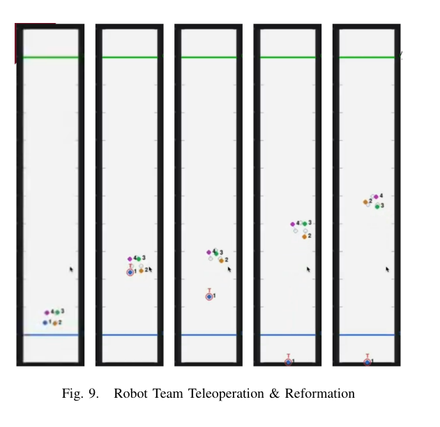
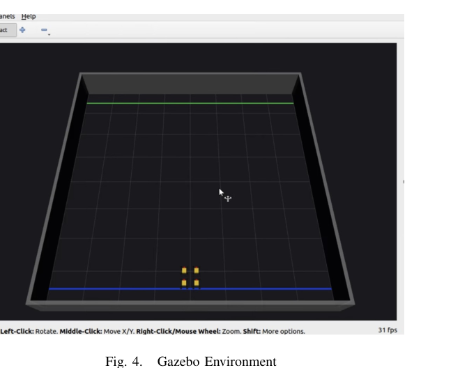

MULTI-ROBOT AUTONOMY · REINFORCEMENT LEARNING
Dynamic Multi-Robot Formation Control
A ROS 2 autonomy and learning framework for robot teams that reconfigure when robots join, leave, or are externally disturbed while continuing toward a shared destination.
Problem
Keep coordinated navigation robust when the active team composition changes at runtime.
My work
Built the Gymnasium-compatible multi-robot environment, trained and evaluated the GNN-based PPO policy, and developed the surrounding ROS 2 autonomy framework for coordinated navigation, reconfiguration, and autonomous joining/leaving.
Learning design
Used per-robot control, agent masking, teleoperation disturbances, collision and goal rewards, and formation-error metrics. A single policy was used across changing formation sizes.
My trained policy consistently reached the goal while maintaining formation during navigation.
ENGINEERING LESSONRobot turning constraints exposed a sim-to-real mismatch, reinforcing the importance of physics-aware training and hardware validation.

